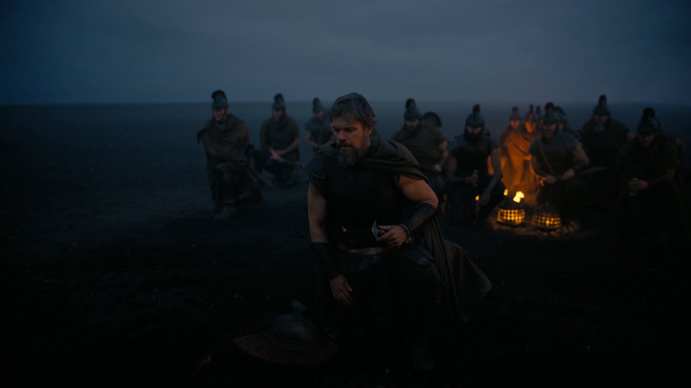
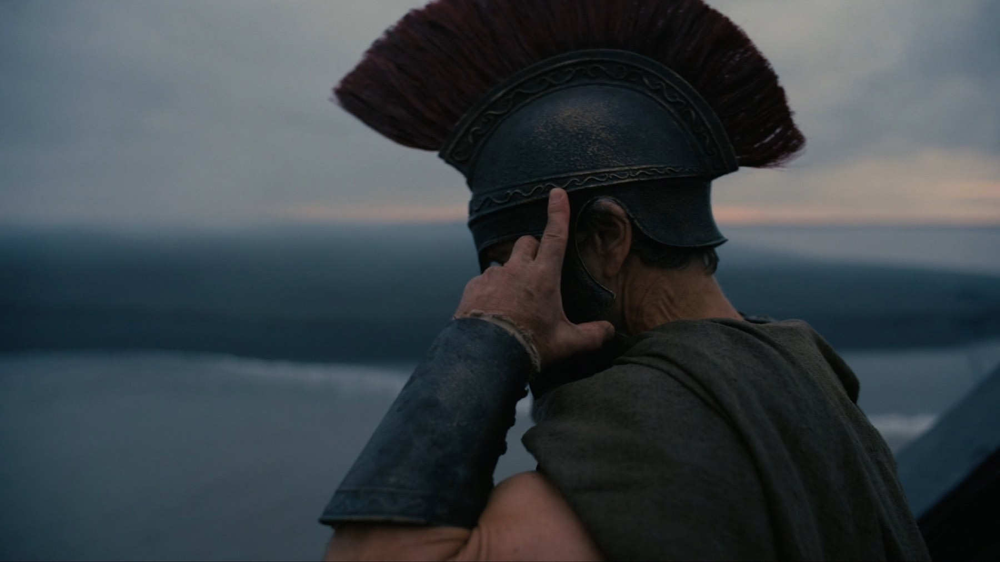

The Odyssey
Nolan porta in sala il viaggio di Ulisse con Matt Damon, Tom Holland e Anne Hathaway: un kolossal girato interamente in IMAX 70mm, ambizioso e spesso spettacolare
Dopo Oppenheimer, ci si chiedeva quale impresa avrebbe scelto Christopher Nolan per il passo successivo. La risposta è la più antica che il cinema occidentale possa permettersi: l'Odissea. Con The Odyssey, in Italia Odissea, il regista britannico affronta il poema di Omero con un budget di 250 milioni di dollari e una promessa precisa, quella di raccontare il mito con un realismo tattile, senza ricorrere agli effetti digitali per ogni mostro.
Di cosa parla The Odyssey?
Il film segue il lungo ritorno a Itaca di Ulisse dopo la guerra di Troia. Matt Damon è il re che deve attraversare mari ostili, incontri con creature leggendarie e capricci degli dèi per tornare dalla moglie Penelope, interpretata da Anne Hathaway, e dal figlio Telemaco, a cui dà il volto Tom Holland. Lungo la strada compaiono, tra gli altri, Polifemo, le Sirene e la ninfa Calipso, interpretata da Charlize Theron.
Nel cast ci sono anche Robert Pattinson nel ruolo del pretendente Antinoo, Samantha Morton come Circe, Lupita Nyong'o e Zendaya, che interpreta Atena. Nolan firma da solo la sceneggiatura, con la fotografia di Hoyte van Hoytema, il montaggio di Jennifer Lame e le musiche di Ludwig Göransson.

Come è stato girato: l'IMAX come scelta narrativa
Il dato che ha fatto più rumore prima dell'uscita è tecnico: The Odyssey è il primo lungometraggio girato per intero con cineprese IMAX su pellicola 70mm. Le riprese sono durate 91 giorni, dal 25 febbraio al 5 agosto 2025, fra Marocco, Grecia, Italia (Sicilia, Eolie, Egadi e costa laziale), Islanda e Scozia, più qualche set allestito negli studi Universal di Los Angeles. Sono stati consumati oltre 600 chilometri di pellicola.
Nolan ha scelto di mostrare il mito attraverso fenomeni naturali e costruzioni concrete: animatronica, marionette, prospettiva forzata e lavoro con i cavi per le creature, riferimenti dichiarati a Harryhausen e, per l'immagine, a film come Andrej Rublëv di Tarkovskij e Ran di Kurosawa. Per prepararsi ha anche confrontato più traduzioni del poema, tra cui quelle di Emily Wilson, E.V. Rieu e Robert Fagles.
Cosa funziona
Prima di tutto lo sguardo. Van Hoytema trasforma i paesaggi marocchini, islandesi e mediterranei in un mondo sospeso tra neoclassicismo e brutalità, dove il mare è un nemico quasi fisico. Le scene d'azione, a partire dagli assalti notturni, hanno una geometria chiara e un peso materiale che i blockbuster digitali hanno in gran parte perso; e il formato gigante, più che un vezzo, serve a far sentire quanto Ulisse e i suoi uomini siano piccoli davanti agli elementi.
Anche le interpretazioni sono al servizio del tono. Matt Damon, secondo la critica italiana tra le sue prove più riuscite, fa a meno dell'eroismo di maniera e mostra un uomo consumato dal viaggio e dalla colpa. Samantha Morton dà a Circe una sorprendente umanità, mentre Anne Hathaway è una Penelope tutt'altro che passiva. Un punto che condividiamo con una parte della critica: i personaggi femminili sono tra le figure più intense del film.
Nolan, inoltre, usa la sua solita costruzione del tempo, con salti e ricordi che spezzano il racconto lineare e riflettono la mente frammentata del protagonista. La colonna sonora di Göransson, che unisce suggestioni orchestrali antiche e un pulsare più moderno, sostiene il tutto senza coprirlo.

Cosa non funziona
Un film che condensa un poema in 172 minuti deve per forza tagliare, e si sente. Alcuni incontri, come quelli con Polifemo e Circe, rischiano il déjà-vu rispetto a tanta iconografia già vista, e i pretendenti di Penelope restano figure sbrigative, più sagome che personaggi. Anche le spiegazioni, in certi momenti, sono più didascaliche del necessario.
C'è poi una questione di fedeltà: gli dèi compaiono pochissimo e il soprannaturale è ridotto al minimo, con Atena trasformata quasi in una coscienza che pesa sul protagonista. È una scelta coerente con l'idea di realismo di Nolan, ma chi ama il poema nella sua dimensione fantastica potrebbe sentirla come una perdita.
Accoglienza e incassi
La prima mondiale è stata il 6 luglio 2026 a Londra, all'Odeon Luxe di Leicester Square, mentre il pubblico italiano lo ha visto dal 16 luglio. Nel weekend di apertura, 17-19 luglio, ha incassato 124,5 milioni di dollari negli Stati Uniti e circa 264 milioni nel mondo, secondo Rotten Tomatoes: la più grande apertura dell'anno per un film dal vivo fino a quel momento, e il 95% di recensioni positive è il punteggio più alto della carriera di Nolan.
Tra le recensioni italiane, Quinlan gli ha dato 8,5 su 10, apprezzando la lettura femminista e i risvolti da Oppenheimer su colpa e conseguenze, pur riconoscendo una certa riduzione del materiale omerico. Per Cinemando, che lo valuta ugualmente 8,5, il film è una meditazione sul cinema, sulla memoria e sulla verità.
A chi lo consigliamo e dove vederlo
Lo consigliamo a chi ama l'avventura epica fatta di cose vere e a chi vuole vedere cosa può ancora fare il grande schermo: l'esperienza, più che mai, è pensata per la sala, meglio se in IMAX. Chi cerca una trasposizione fedele di Omero o un'avventura leggera troverà invece un film serio, lungo e a tratti cupo.
Secondo Box Office Mojo, a inizio ottobre 2026 il film risulta a circa 1,75 miliardi di dollari di incasso mondiale, con circa 66 milioni di dollari solo in Italia. Al 2 ottobre 2026, TMDB non segnala ancora una disponibilità in streaming o a noleggio in Italia: l'unico modo per vederlo resta, per ora, il cinema.
The Odyssey è Nolan al massimo dell'ambizione: un'epica concreta e splendida da vedere, con un Matt Damon asciutto e personaggi femminili forti. Se da un lato condensare l'Odissea in meno di tre ore lascia per strada molto di Omero, dall'altro la potenza dell'immagine e del suono ripaga ampiamente il biglietto. Da vedere sullo schermo più grande possibile.
Domande frequenti
Quando esce The Odyssey in Italia?
Il film di Christopher Nolan è uscito nelle sale italiane il 16 luglio 2026, distribuito da Universal Pictures, un giorno prima degli Stati Uniti e del Regno Unito (17 luglio).
Quanto dura The Odyssey?
Dura 172 minuti, cioè due ore e 52 minuti.
The Odyssey è girato in IMAX?
Sì, è il primo lungometraggio girato interamente con cineprese IMAX su pellicola 70mm.